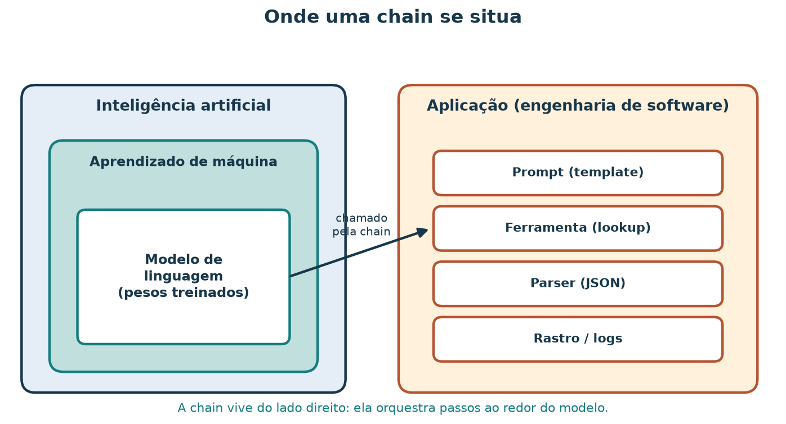
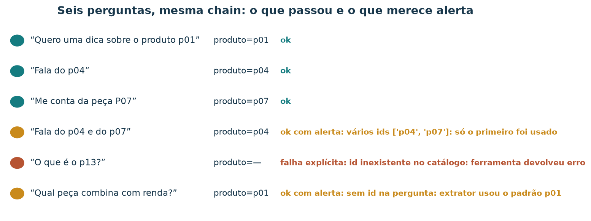
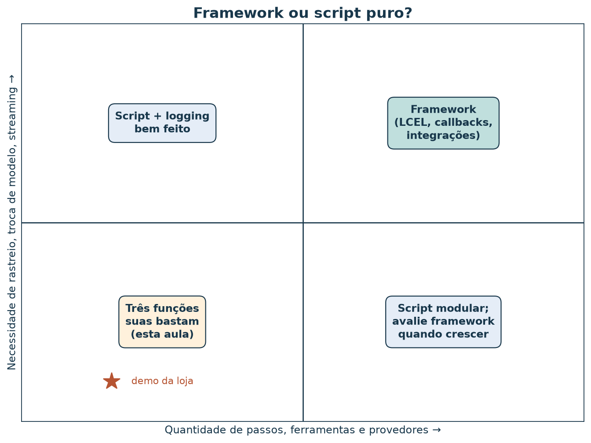

Orquestrar passos ao redor de um modelo: uma chain mínima com LangChain
Leia a versão web com o explorador incorporado.
A loja de artesanato quer um atendimento por chat que responda a pedidos como “Fala do p04” com a ficha certa do catálogo, sem inventar técnica nem região. Um modelo de linguagem sozinho não conhece o catálogo da loja. Alguém precisa extrair o id da pergunta, buscar a ficha, montar o prompt, chamar o modelo e converter a resposta num formato que o site consiga usar. Essa sequência de passos é o que o mercado chama de chain.
Ao concluir esta aula, você deverá conseguir descrever uma chain como composição de funções, nomear o papel de cada peça (template, modelo, parser, ferramenta), ler um rastro passo a passo, reconhecer três modos de falha da chain da loja e argumentar quando um framework como o LangChain ajuda e quando três funções Python bastam.
O “modelo” desta aula é uma função determinística: lê a ficha e devolve um JSON. Assim você roda tudo sem chave de API e obtém sempre a mesma saída. O catálogo é sintético. Os resultados demonstram a mecânica da orquestração, e não a qualidade de um modelo de linguagem real.
Roteiro de estudo
| Tempo sugerido | Atividade |
|---|---|
| 8 min | Situar uma chain entre modelo e aplicação |
| 10 min | Definir chain como composição e conhecer as peças |
| 12 min | Rodar o script puro e o modo LangChain; comparar saídas |
| 12 min | Ler o rastro de seis perguntas, incluindo três falhas |
| 15 min | Percorrer o explorador passo a passo e exportar evidência |
| 8 min | Discutir o que muda com um modelo real |
| 10 min | Decidir framework ou script e resolver o exercício |
1. Onde uma chain se situa
Inteligência artificial (IA) é o campo que desenvolve sistemas capazes de tarefas como perceber, raciocinar, aprender e decidir. Aprendizado de máquina (ML) é a área da IA em que modelos ajustam parâmetros a partir de dados. Um modelo de linguagem é um modelo de ML treinado em grandes volumes de texto para prever a continuação de uma sequência de palavras; seus parâmetros (os pesos) ficam fixos depois do treino.

Figura 1 — A chain vive do lado da aplicação. Ela não altera os pesos do modelo; ela decide o que entra no modelo e o que fazer com o que sai. Os tamanhos dos blocos não representam a importância relativa das partes.
Uma chain é, portanto, código de aplicação. Ela pertence à engenharia de software ao redor do modelo: preparar entradas, chamar serviços, validar saídas, registrar o que aconteceu. Frameworks de orquestração, como o LangChain, oferecem peças prontas para esses passos e uma forma padronizada de encadeá-las.
2. Chain como composição de funções
Cada passo recebe uma entrada e devolve uma saída. Encadear passos é compor funções: a saída de um vira a entrada do seguinte. Na chain da loja,
ou, na notação de composição,
A composição só funciona quando o tipo de saída de cada passo coincide com o tipo de entrada do seguinte. Grande parte dos defeitos de uma chain aparece nessas junções: um passo devolve texto quando o próximo espera um dicionário, ou devolve um id que a ferramenta não conhece.
No LangChain, o mesmo encadeamento se escreve com o operador
| da LangChain Expression Language (LCEL). Cada
peça é um Runnable, objeto com o método
invoke:
chain = prompt | modelo | parser # lê-se da esquerda para a direita
resposta = chain.invoke({"pergunta": "Fala do p04"})A ordem de leitura é a inversa da notação
:
em a | b, primeiro roda a, depois
b.
As peças e seus papéis
| Peça | Recebe | Devolve | Nesta aula |
|---|---|---|---|
| Extrator | texto da pergunta | pid (ex.: "p04") |
expressão regular p\d{2} |
| Ferramenta (tool) | pid |
ficha do produto | lookup_produto lê dados/catalogo.json |
| Template de prompt | variáveis | lista de mensagens | ChatPromptTemplate com system +
human |
| Modelo | mensagens / estado | texto | função determinística modelo_stub |
| Parser | texto | estrutura de dados | StrOutputParser garante texto; json.loads
converte em dicionário |
| Rastro | cada passo | registro auditável | rastros.json |
Uma ferramenta é uma função externa ao modelo que a chain chama para obter um fato confiável — aqui, a ficha do catálogo. Um parser converte o texto do modelo num formato que o restante do sistema entende. O rastro registra o que entrou e saiu de cada passo; é com ele que você depura e audita.
As classes citadas foram conferidas em langchain-core
1.7.6:
langchain_core.prompts.ChatPromptTemplate,
langchain_core.runnables.RunnableLambda e
RunnablePassthrough,
langchain_core.output_parsers.StrOutputParser (e
JsonOutputParser, que você usará no exercício). Nomes de
pacotes e classes mudam entre versões; confira a referência
de Runnables da versão instalada antes de copiar exemplos
antigos.
3. Rodar a chain pelos dois caminhos
O script demo_langchain_loja.py
implementa os mesmos passos duas vezes: em Python puro e com peças do
LangChain. Rode na raiz do repositório.
Caminho A — script puro, sem pacote extra:
uv run python scripts/demo_langchain_loja.py --modo puroCaminho B — LangChain, com o pacote de núcleo
instalado só para esta execução (o pyproject.toml não
muda):
uv run --with langchain-core python scripts/demo_langchain_loja.py --modo langchainNos dois casos, a pergunta padrão é “Quero uma dica sobre o produto
p01” e a saída esperada, em saida, é:
{
"ok": true,
"produto": "p01",
"resumo": "Jarro barro Tracunhaém — técnica ceramica (Tracunhaém)",
"pergunta": "Quero uma dica sobre o produto p01"
}O campo modo muda (script_puro ou
langchain); saida fica idêntica. Esse é o
primeiro resultado da aula: o framework não mudou o
comportamento, apenas a forma de escrever o encadeamento. O
arquivo langchain/resultado_chain_loja.json
guarda uma execução do caminho B com a pergunta “Fala do p04”:
uv run --with langchain-core python scripts/demo_langchain_loja.py --modo langchain --pergunta "Fala do p04"Leia a chain do caminho B
O trecho essencial de chain_langchain:
chain = (
{"pergunta": RunnablePassthrough()}
| RunnableLambda(lambda p: {"pergunta": p if isinstance(p, str) else p["pergunta"]})
| RunnableLambda(ferramenta) # extrai o id e faz o lookup
| RunnableLambda(lambda estado: {**estado,
"prompt_preview": prompt.format(pergunta=estado["pergunta"])})
| RunnableLambda(chamar_modelo) # modelo determinístico
| StrOutputParser()
)RunnableLambda transforma qualquer função Python num
Runnable; o dicionário inicial com RunnablePassthrough
repassa a entrada sob a chave pergunta. Repare num detalhe
que um rastro revela e uma leitura rápida esconde: o template formata as
mensagens, mas a ficha do produto não entra no prompt.
O modelo determinístico recebe a ficha diretamente pelo estado. Um
modelo de linguagem real só saberia da ficha se ela estivesse no texto
enviado. O exercício pede que você corrija isso.
4. O rastro: o que viaja em cada seta
Para estudar a chain como um processo, rode o lote de seis perguntas. Ele executa os dois caminhos e grava, passo a passo, a carga de cada seta:
uv run --with langchain-core python scripts/demo_langchain_loja.py --loteResultado esperado no terminal (uma linha por pergunta, abreviada aqui):
Quero uma dica sobre o produto p01 → {"ok": true, "produto": "p01", …} | idênticas: True | []
Fala do p04 → {"ok": true, "produto": "p04", …} | idênticas: True | []
Me conta da peça P07 → {"ok": true, "produto": "p07", …} | idênticas: True | []
Fala do p04 e do p07 → {"ok": true, "produto": "p04", …} | idênticas: True | ["vários ids ['p04', 'p07']: só o primeiro foi usado"]
O que é o p13? → {"ok": false, "motivo": "produto_nao_encontrado"} | idênticas: True | ['id inexistente no catálogo: ferramenta devolveu erro']
Qual peça combina com renda? → {"ok": true, "produto": "p01", …} | idênticas: True | ['sem id na pergunta: extrator usou o padrão p01']O arquivo langchain/rastros.json
guarda os seis rastros. Para “Fala do p04”, as cargas são:
| Seta | Tipo | Carga |
|---|---|---|
| entrada → extrair | texto | "Fala do p04" |
| extrair → lookup | dicionário | {"pid": "p04", "achado_no_texto": true} |
| lookup → prompt | dicionário | {"id": "p04", "nome": "Rendeira Alto do Moura", "tecnica": "renda", "regiao": "Alto do Moura"} |
| prompt → modelo | lista de mensagens | system: “Você resume um produto do catálogo em JSON.”;
human: “Fala do p04” |
| modelo → parser | texto | '{"ok": true, "produto": "p04", "resumo": "Rendeira Alto do Moura — técnica renda (Alto do Moura)", …}' |
| parser → aplicação | dicionário | {"ok": true, "produto": "p04", …} |

Figura 2 — Cada seta carrega um tipo diferente: texto, dicionário, lista de mensagens, texto JSON e, por fim, dicionário. A fórmula na base é a mesma composição da seção 2. O modelo desta figura é determinístico.
Três modos de falha nesta chain

Figura 3 — Mesma chain, seis entradas. A cor indica o estado final: verde para resposta limpa, âmbar para resposta com alerta, terracota para falha explícita. Os alertas vêm do rastro, e não da saída final.
- Id inexistente (“O que é o p13?”). O catálogo tem
12 produtos. A ferramenta devolve
{"id": "p13", "erro": "produto_nao_encontrado"}e o modelo responde{"ok": false, "motivo": "produto_nao_encontrado"}. É uma falha explícita: o site sabe que não há resposta e pode pedir outro id. - Pergunta sem id (“Qual peça combina com renda?”). O
extrator não encontra
p\d{2}e usap01como padrão. A saída temok: truee fala do Jarro, uma peça de cerâmica. É uma falha silenciosa: nada na saída final avisa que a pergunta foi ignorada. O padrãop01é uma escolha de projeto do script, conveniente para a demonstração e arriscada num atendimento real. - Dois ids (“Fala do p04 e do p07”). Só o primeiro é usado. A resposta está correta para metade da pergunta.
Os casos 2 e 3 só aparecem porque o rastro registra
achado_no_texto e os ids encontrados. Sem rastro, você
veria três respostas com ok: true.
5. Explore o rastro com BI
O explorador da chain percorre os seis rastros passo a passo. Você escolhe a pergunta, avança seta por seta, vê a carga exata de cada passo e um fluxo em que falhas e alertas ficam destacados. A tabela de auditoria compara as saídas do script puro e do modo LangChain. Consulte o roteiro de exploração. Para estudar offline, abra o HTML a partir de uma cópia local do repositório.
Percorra a chain neste tutorial
Escolha uma pergunta e acompanhe o que viaja em cada etapa. O modelo da demonstração é determinístico.
O painel relê rastros gravados: trocar a pergunta
não executa a chain nem chama um modelo. Para outra pergunta,
acrescente-a a PERGUNTAS_LOTE no script, rode
--lote e depois:
uv run python scripts/gerar_bi_chain.pyAtividade no painel
- Em “Fala do p04”, avance os seis passos e anote o tipo de cada carga.
- Em “O que é o p13?”, identifique o primeiro passo marcado como falha.
- Em “Qual peça combina com renda?”, encontre o passo em que a informação da pergunta se perdeu.
- Exporte o PNG do fluxo de um caso com alerta e o CSV da auditoria.
Resolução comentada: as cargas são texto,
dicionário, dicionário, lista de duas mensagens, texto JSON e
dicionário. Para p13, a primeira falha está na ferramenta
(passo 3), que devolve erro; o parser também fica marcado
porque a saída tem ok: false. Para “renda”, a perda
acontece no passo 2: pid = p01 com
achado_no_texto: false. O CSV mostra “sim” na coluna de
comparação para as seis perguntas.
6. O que muda com um modelo de linguagem real
Trocar modelo_stub por um modelo real mantém a forma da
chain e muda quatro propriedades:
| Propriedade | Modelo determinístico da aula | Modelo de linguagem real |
|---|---|---|
| Reprodutibilidade | mesma entrada, mesma saída | o texto pode variar entre chamadas; temperatura e versão do modelo influenciam |
| Conhecimento | lê a ficha diretamente | sabe apenas o que está nos pesos e no prompt; a ficha precisa estar no texto |
| Formato da saída | JSON sempre válido | pode devolver texto fora do formato; o parser precisa tratar erro ou pedir saída estruturada |
| Custo e latência | microssegundos, sem custo | cobrança por tokens de entrada e saída, latência de rede |
Um token é a unidade de texto que o modelo processa (aproximadamente um pedaço de palavra). Provedores cobram por token e limitam quantos cabem numa chamada, por isso colar fichas inteiras no prompt tem custo. Saída estruturada é o recurso de pedir ao modelo, ou ao provedor, uma resposta que obedeça a um esquema JSON; ela reduz, sem eliminar, a necessidade de validar o resultado no parser.
O padrão ferramenta → prompt → modelo, em que um fato confiável é buscado e colocado no prompt antes da geração, é o mesmo princípio da geração aumentada por recuperação (RAG), usada quando o fato está em documentos.
7. Framework ou script puro?

Figura 4 — Um mapa de decisão qualitativo. Os eixos não têm escala medida; a posição da estrela resume o tamanho da demo da loja: cinco passos, uma ferramenta, nenhum provedor externo.
| Situação | Tendência | Por quê |
|---|---|---|
| Poucos passos, uma ferramenta, sem provedor externo | script puro | três funções são lidas por qualquer pessoa da equipe; o rastro é um
dict |
| Vários provedores de modelo, troca frequente | framework | as integrações padronizam a interface de chamada |
| Necessidade de streaming, callbacks e tracing | framework | o mecanismo de callbacks registra cada Runnable sem código extra |
| Equipe aprendendo os conceitos | script puro primeiro | cada passo fica visível; o framework vem depois, com vocabulário |
| Dependência estável e auditável é prioridade | script puro ou núcleo mínimo | langchain-core sozinho é menor que o ecossistema
completo; versões mudam APIs |
O critério de fundo é o mesmo da engenharia de software: adote a abstração quando ela remove mais complexidade do que acrescenta. Nesta aula, o script puro e a chain do LangChain produzem saídas idênticas; o que você ganha com o framework é vocabulário de mercado e um caminho para crescer.
8. Limitações
- O modelo é determinístico; a aula não mede qualidade de geração de texto.
- O extrator por expressão regular cobre apenas ids no formato
pNN. Nomes (“o jarro”) não são reconhecidos. - O padrão
p01para perguntas sem id é uma escolha de demonstração; num atendimento real ele produz respostas confiantes para a pergunta errada. - O catálogo é sintético, com 12 produtos.
9. Exercício: endureça a chain
Entregue:
- A composição
da sua chain, na notação
e na notação
|, com o tipo de entrada e de saída de cada passo. - A saída
saidados caminhos A e B para a pergunta “Me conta da peça P07”, com o comando usado, e uma frase sobre a comparação. - Uma alteração no script que faça “Qual peça combina com renda?”
devolver
{"ok": false, "motivo": "sem_id"}em vez de usarp01. Rode--lotee mostre a linha nova. - Um novo template de prompt que inclua a ficha (nome, técnica e
região) na mensagem
human. Mostre as mensagens formatadas para “Fala do p04”. - Cinco linhas: em que situação da loja você adotaria o framework, e o que você mediria antes de decidir.
Resolução comentada
1.
;
em LCEL, extrair | lookup | prompt | modelo | parser.
Tipos: texto → pid (texto) → ficha (dicionário) → mensagens
(lista) → texto JSON → dicionário.
2. Os dois caminhos devolvem
{"ok": true, "produto": "p07", "resumo": "Xilogravura Pilar — técnica xilogravura (Comunidade do Pilar)", …}.
O extrator converte a pergunta para minúsculas, por isso
P07 é reconhecido. As saídas são idênticas, como mostra a
coluna saidas_identicas do lote.
3. Uma solução mínima altera
extrair_pid para devolver None quando não há
id e faz lookup_produto tratar None com
{"erro": "sem_id"}; o modelo determinístico já converte
erro em ok: false. A linha do lote passa a ser
Qual peça combina com renda? → {"ok": false, "motivo": "sem_id"}.
A falha deixa de ser silenciosa.
4. Por exemplo,
("human", "Pergunta: {pergunta}\nFicha: {nome}, técnica {tecnica}, região {regiao}").
Para p04, a mensagem human fica “Pergunta:
Fala do p04 / Ficha: Rendeira Alto do Moura, técnica renda, região Alto
do Moura”. Com essa mudança, um modelo real recebe o fato de que
precisa.
5. Uma resposta possível: adotar o framework quando o chat precisar trocar entre dois provedores de modelo, registrar rastros num painel de observação e somar ferramentas (estoque, frete). Antes de decidir, medir quantas linhas de cola o framework remove, o tempo de atualização de versões e se a equipe consegue depurar um rastro nas duas versões.
Referências e artefatos
Leitura
- LANGCHAIN. langchain_core.runnables. Referência da
API em inglês, disponível
on-line. Para consultar: o protocolo Runnable
(
invoke,batch,stream),RunnableLambda,RunnablePassthroughe a composição com|. - LANGCHAIN. ChatPromptTemplate. Referência
em inglês. Para consultar: mensagens
system/humane variáveis do template. - LANGCHAIN. output_parsers e StrOutputParser. Módulo · StrOutputParser. Para consultar: parsers de texto e JSON; a própria referência indica saída estruturada como alternativa moderna aos parsers.
- LANGCHAIN. Tools e Structured output. Tools · Structured output. Para aprofundar: como um modelo real escolhe e chama ferramentas e devolve respostas num esquema.
Consulta dos materiais on-line: 7 nov. 2026. As APIs citadas foram
conferidas em langchain-core 1.7.6.
Artefatos no repositório
| Artefato | Papel |
|---|---|
dados/catalogo.json |
Catálogo sintético de 12 produtos (ferramenta de lookup) |
scripts/demo_langchain_loja.py |
Chain nos dois caminhos; --lote grava os rastros |
material/langchain/resultado_chain_loja.json |
Uma execução do caminho B (“Fala do p04”) |
material/langchain/rastros.json |
Seis perguntas, passo a passo, nos dois caminhos |
material/bi-chain/ |
Explorador do rastro |
scripts/gerar_bi_chain.py |
Gera bi-chain/dados.js a partir dos rastros |
material/imagens/ (regenerar:
.local/scripts/gerar_figuras_chain_memoria.py) |
Gera as figuras desta aula |